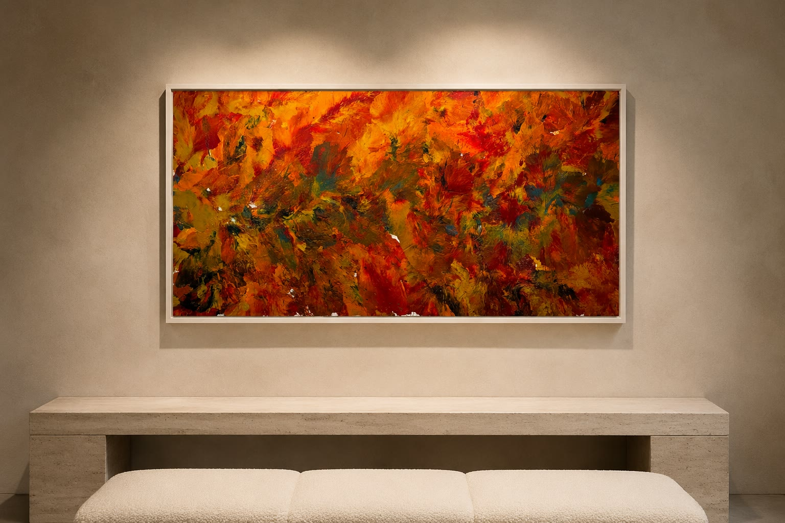
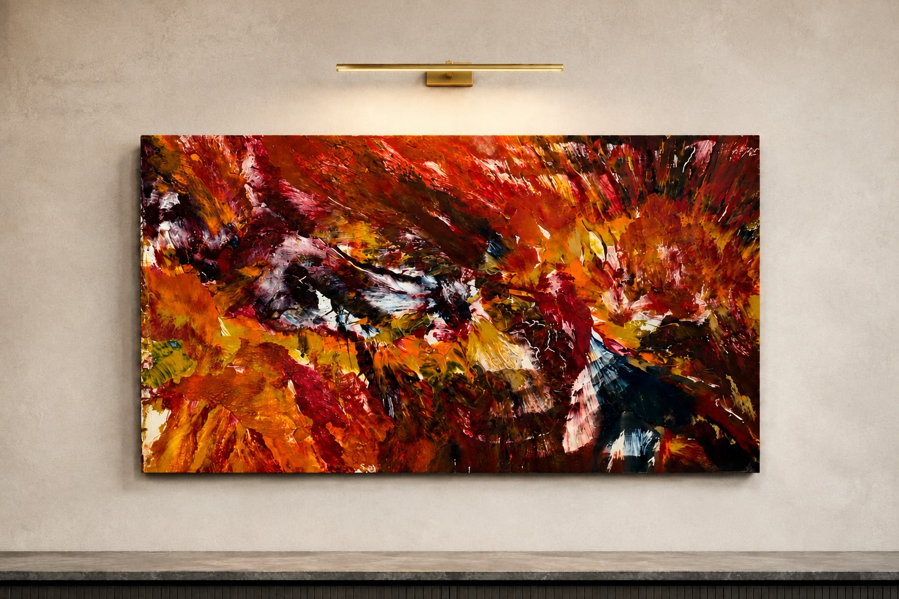
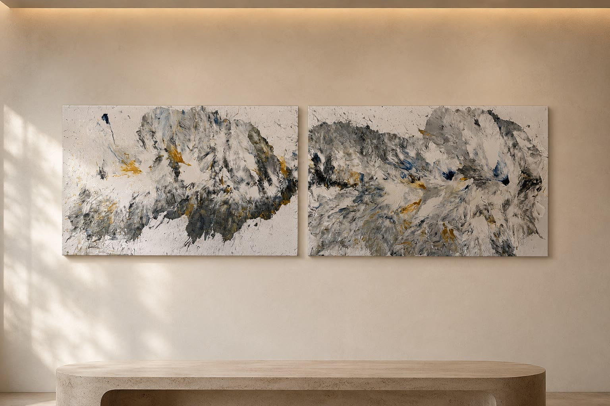

אמנות נוזלית וטקסטורלית
אמנות בהתאמה אישית לחלל שלכם
יצירות אבסטרקט ייחודיות בעבודת יד, בהתאמה לחלל, לצבעים ולאווירה שאתם רוצים ליצור.
יעד ליצירת קשר יחובר לפני ההשקה.

יצירה בולטת
תנועה, עומק וצבע

פלטה רגועה
נוכחות שקטה יותר
גוונים מינרליים רכים, תנועה שכבתית ונגיעות מטאליות מעודנות לחללים עכשוויים ושקטים יותר.

יצירה אישית
נוצר במיוחד לחלל שלכם
כל יצירה מתחילה בחלל — בפרופורציות, באור, בפלטת הצבעים ובתחושה שאתם רוצים ליצור בו.
מהקיר אל היצירה
תהליך פשוט
-
01
משתפים את הקיר
שולחים תמונה של החלל ומידות משוערות של הקיר.
-
02
מגדירים כיוון
מדברים על הצבעים, האווירה והתחושה שתרצו ליצור.
-
03
יוצרים את העבודה
יצירה חד־פעמית נוצרת במיוחד עבור החלל שלכם.
מתחילים מהחלל
הקיר שלכם יכול להיות
נקודת ההתחלה.
שלחו תמונה וכמה מידות משוערות, ומשם נתחיל את השיחה.
יעד ליצירת קשר יחובר לפני ההשקה.